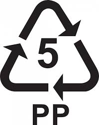

POLIPROPILENO

El polipropileno (PP) es el polímero termoplástico, parcialmente cristalino, que se obtiene de la polimerización del propileno (o propeno). Pertenece al grupo de las poliolefinas y es utilizado en una amplia variedad de aplicaciones que incluyen empaques para alimentos, tejidos, algunos muebles o equipamiento, equipo de laboratorio, componentes automotrices y películas transparentes. Tiene gran resistencia contra diversos solventes químicos, así como contra álcalis y ácidos metalúrgicos como el acetato de sodio.